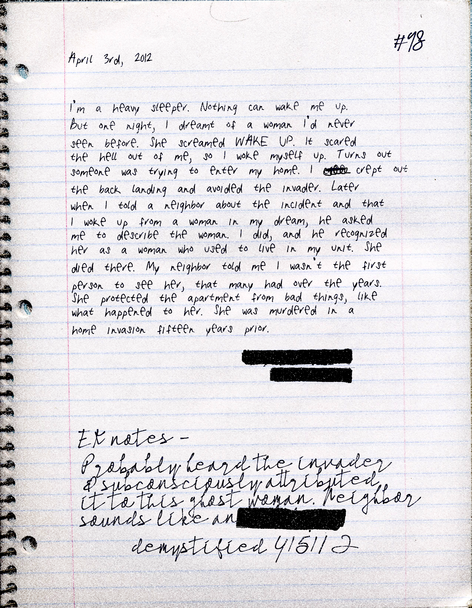

April 3rd, 2012
I'm a heavy sleeper. Nothing can wake me up.
But one night, I dreamt of a woman I'd never
seen before. She screamed WAKE UP. It scared
the hell out of me, so I woke myself up. Turns out
someone was trying to enter my home. I crept out
the back landing and avoided the invader. Later
when I told a neighbor about the incident and that
I woke up from a woman in my dream, he asked
me to describe the woman. I did, and he recognized
her as a woman who used to live in my unit. She
died there. My neighbor told me I wasn't the first
person to see her, that many had over the years.
She protected the apartment from bad things, like
what happened to her. She was murdered in a
home invasion fifteen years prior.
[REDACTED]
[REDACTED]
EK Notes -
Probably heard the invader
& subconsciously attributed
it to this ghost woman. Neighbor
sounds like an [REDACTED]
Demystified 4/5/12
